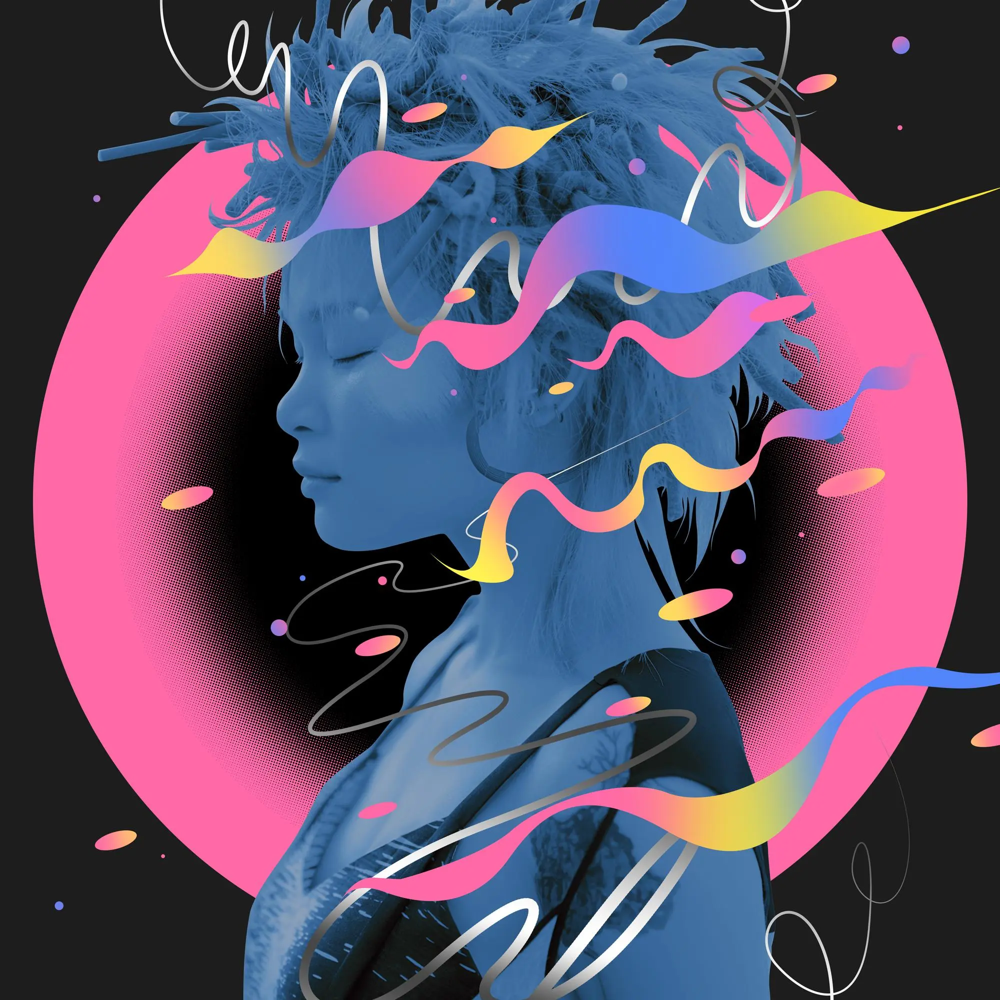

Album#30
幻
{kind=link}

专辑信息
- 专辑名称：幻
- 歌手：苏运莹
- 年份：2018-12-13
- 风格：流行
- 时长：约 50 分钟

每日分享里听到「在这里请你随意」，喜欢这首歌的旋律、节奏和声音，这首歌的风格会让我想到类似陳嫺靜、张醒婵这样的歌手，但我绝对不会想到是 苏运莹。
苏运莹应该出道很久了，她的歌我听的不多，没想到她还有一张这么有趣的专辑，还是 2018 年的。
「幻」这张专辑蛮有趣的，从专辑的歌名看，它是有设计的，从「它是一个序 早安版本」开始到「它是一个序 晚安版本」结束，中间则是一系列的生活故事。相比只是堆砌几首歌的专辑，我会更喜欢这种歌曲之间有一些关联的专辑。
「幻」里面，我最喜欢的是「在这里请你随意」、「女人珍珠般的心」、「它是一个序 晚安版本」、「忧伤少年和阳光女孩」，其次是「IS」、「你也是吗」、「你拥有的是现在」，剩下的风格我不太喜欢。
专辑的作词作曲基本都是苏运莹，制作人是 荒井十一 ，他在方大同的 15 live 里出现过，我对他还有点印象。
它是一个序 早安版本
歌曲介绍
就好比一本书的最开始保留了先导出一个序，也是一个全新的开端也像是像面对生活第一天的开始，对生活的认真对音乐的热忱，听完这个序，欢迎来到苏运莹的「幻」世界。
清晨我看见一团迷雾 散开
我从床上跳到床下看 云开
对楼的邻居正吃早餐 好吃
而我正准备喝杯牛奶 甜的
oh 早晨醒来 oh 早晨美好
oh 阳光很好 oh 早晨美好
oh 早安说著 oh 早晨美的
oh 阳光洒著 oh 早晨好的
早晨好的
Good morning~
仔细听的话，你会听到开头起身下床的声音，离开时关门的声音、广播的声音、接水的声音。
Good morning (・∀・)ノ
IS
歌曲介绍
我喜欢甜甜的味道，花儿香、草儿香，整首甜甜的音乐甜甜的唱着，向往着未来，在云端飞翔的，保持着最初的赤诚，崇拜着勇敢，一路闯过灰暗，因为有了甜甜的味道让荆棘路上燃起了光明。
我喜欢甜甜的味道 花儿花儿香 草儿草儿香
我喜欢甜甜的味道 木头的清新 树叶的芬澜
我喜欢甜蜜的味道 人们的笑脸 婴儿的哭声
我喜欢甜蜜的味道 沙滩的足迹 泥泞的足迹
向往的 云端 飞扬 歌颂那些勇敢的心
当我推开雾的黎明 发现赤诚永远存在
向往的 云端 飞扬 歌颂那些勇敢的你
当我闯过灰色地带 看见光明一直燃燃
甜甜的腻腻的味道 花儿花儿香 草儿草儿香
甜甜的蜜蜜的味道 狂奔的大马 粘人的猫咪
呼吸在这一瞬间 放肆也在这一瞬间
甜甜的诱人的味道 喵喵的猫咪 对著我撒娇
向往的 云端 飞扬 歌颂那些勇敢的心
当我推开雾的黎明 发现赤诚永远存在
向往的 云端 飞扬 歌颂那些勇敢的你
当我闯过灰色地带 看见光明一直燃燃
向往的 云端 飞扬 歌颂那颗炙热的心
当我拥有雾的黎明 发现挚爱永远都在
向往的 云端 飞扬 歌颂那个勇敢的心
当我闯过灰色地带 握著光明 让它冉冉
我喜欢甜甜的味道 花儿花儿香 草儿草儿香
我喜欢甜甜的味道
我也喜欢甜甜的味道，尤其是撒娇黏腻的猫咪 ( 〃▽〃)
你也是吗
歌曲介绍
平凡生活的调味剂，洒脱自由的凡人歌。轻快随性的电子曲风，简单写实的歌词记录看到的生活。
不同于以往的空灵意象化，苏运莹从意念幻象世界踏入简单生活，以第一人称视角诠释现代「孤独人」的生活方式。
了无人潮的街道，形色匆忙的过客，回家后或是温暖或是寂寞，在孤独的时候，影子与你相伴左右，小小的幸福也能照亮你我，我们都用属于自己的生活方式，享受着平凡生活，
所以，你也是吗？
我刚下班 走在路上 看著人潮了无
拿著电脑 提著背包 感觉有点冷清
谁 在家等著我 给我一杯温的水
谁 也和我一样 到家后面对寂寞
寂寞它 是谁 总伴著我左右
寂寞它 多重 并不想去惦量
它总是属于我 我不知道 它为什么不走
好吧 和影子 至少是亲密
你也是吗 你也是吗 你也是吗
你也是吗 你也是吗 你也是吗
你也是吗 你也是吗 你也是吗
你也是吗 你也是吗 你也是吗
和我一样到家后面对寂寞
我刚下班 走在路上 看著人潮了无
拿著电脑 提著背包 感觉有点冷清
谁 在家等著我 给我一杯温的水
谁 也和我一样 到家后面对寂寞
寂寞它 是谁 总伴著我左右
寂寞它 多重 并不想去惦量
它总是属于我 我不知道 它为什么不走
好吧 和影子 真的是亲密
你也是吗 你也是吗 你也是吗
你也是吗 你也是吗 你也是吗
你也是吗 你也是吗 你也是吗
你也是吗 你也是吗 你也是吗
和我一样到家后面对寂寞
你也是吗 你也是吗 你也是吗
你也是吗 你也是吗 你也是吗
你也是吗 你也是吗 你也是吗
你也是吗 你也是吗 你也是吗
和我一样到家后面对寂寞
dala dala ~ ~ ~
编曲蛮有趣的，你也是吗，你也是「和我一样到家后，面对寂寞」吗？
春节女朋友回去了，回家也要面对寂寞了，虽然一个人也很快乐，但习惯了两个人，面对空荡的房间，还是会有一点落寞。
(｡•́︿•̀｡)
这首我蛮喜欢的。
你拥有的是现在
歌曲介绍
偶然的下雨天，女孩打着伞踏出门去看雨、买花，路上的人儿，躲着雨，撑着伞，狂奔着，漫步着，有的人撑着伞晃晃悠悠，有的人在雨中行色匆匆，时间就像他们脚下不曾停滞的水花，起起伏伏滴滴答答，仿佛一路向前，才是通往未来的方向，路过的，错过的都朝前走吧，亲爱的，你值得拥有更好的怀抱。
地上 一滩泥巴水 脚上 步伐似箭
街边 路灯在闪艳 孩童 在嬉戏游戏
我关上门在房间点灯 灯光把黑色变美
闭上眼睛想一想 面对光明的模样
身边的人请你想一想
你在过什么样的生活
路过的 错过的 就朝前走呀
你值得拥有更好更大的怀抱
怀念从前的请想一想
现在的你是否更耀眼
难过著 开心著 就慢慢成长
你值得拥有更好更大的怀抱
看见 一滩泥巴水 脚上 像踏浪而过
街边 夜灯在勾搭 孤独 的大人的心
我关上门在房间点烛 烛光在夜色中独舞
闭上眼睛想一想 面朝阳光的模样
身边的人请你想一想
你在过什么样的生活
路过的 错过的 就朝前走呀
你值得拥有更好更大的怀抱
怀念从前的请想一想
现在的你是否更耀眼
难过著 开心著 就慢慢成长
你值得拥有更好更大的怀抱
身边的人请你想一想
你在过什么样的生活
路过的 错过的 就朝前走呀
你值得拥有更好更大的怀抱
怀念从前的请想一想
现在的你是否更耀眼
难过著 开心著 就慢慢成长
你值得拥有更好更大的怀抱
一首温柔的歌，「你值得拥有更好更大的怀抱」。
在这里请你随意
歌曲介绍
不为烦恼忧愁生闷气，不做世俗凡事的牺牲品，一如苏运莹自由随性的个性，在这首短暂的三分钟里，苏运莹用歌声表达了喜乐人生的超然姿态，打破对错，无视规定，没有不可以。她用音乐划出一片「烦恼禁区」，为枯燥无味的生活解放天性，动感活力的曲风，轻快干脆的鼓点，点燃热烈的情绪，幻想在每一个松弛的意境里。
音乐起，请你随意。
那些让你不想再去想得悲伤的往事
那些让你不再快乐的生活的大小的杂事
你不要再去想了 就让它随风让它走
你不要再去在乎它 别让它成为你负担
就跟著这个节奏举起手 摆一摆
就跟著我的歌声尽情的 摆一摆
此刻我们只 需要尽情的释放
此刻我们只 要想著高兴的事
你可以大叫你可以高喊 在这里请你随意
你可以大笑你可以流泪 在这里请你随意
很长的 3 分钟 你 尽 情 的 释 放
这歌有 3 分钟 你 尽 情 地 释 放
你可以亲吻你可以骂人 在这里请你随意
你可以睡觉你可以撒野 在这里请你随意
就跟著这个节奏举起手 摆一摆
就跟著我的歌声尽情的 摆一摆
就跟著这个节奏举起手 摆一摆
就跟著我的歌声尽情的 摆一摆
你可以大叫你可以高喊 在这里请你随意
你可以大笑你可以流泪 在这里请你随意
你可以亲吻你可以骂人 在这里请你随意
你可以睡觉你可以撒野 在这里请你随意
好的 三分钟到了 要唱下一首歌 了
编曲里的手拍鼓和拍手，节奏慢慢加快，像是有人在为你伴奏，让你在这 3 分钟里尽情舞蹈、尽情释放。
中间还有一些片段只有器乐，真的很像是舞蹈伴奏，让人感到开心。
⁽⁽◝( • ω • )◜⁾⁾
喜欢苏运莹在这首歌的声音，贝斯的旋律也好听。
这首歌里，苏运莹的声音会让我想到石璐，可以听听石璐的「狗粮」和刺猬的「头上的包」（乐队的夏天 live 版本，鼓手是石璐，后面她也唱了一些）。
随意一点吧 (ﾉ>ω<)ﾉ
这首应该是专辑里我最喜欢的一首吧。
女人珍珠般的心
歌曲介绍
陷入爱情的女人往往容易付出自己珍珠般的真心，却时常不被珍惜，动感鼓点和热烈电吉他的绝妙搭配，记录一段幻想梦境的「恋爱复仇笔记」，在无拘无束的幻想梦境中，化身正义的复仇之神，开启苏运莹的反击摇滚大作战，不被珍惜的爱情战役，不如潇洒离去！
有一个男人他骗走我所有的财产
这个财产就是我单纯的心
有一个男人他花光我所有的积蓄
这个积蓄就是我可爱的心
骗我 玩我 娱计我
亲我 抱我 扔掉我
晚安 早安 这是每天都要和你说的话
你还记得吗
有一名男子他每天都说好爱我
这个爱我就是绑住我的心
有一名男子他总是对著我发呆
这个发呆就是蛊惑我的毒
骗我 玩我 娱计我
亲我 抱我 扔掉我
晚安 早安 这是每天都要和你说的话
你还记得吗
早安 晚安 每天甜蜜的对话粘得像藕片
你还有印象吗
你到底 是个什么烂东西 1
从现在开始 我要 骗你 玩你 娱计你
你到底 脚上船鞋穿了几只
从现在起 我要 亲你 抱你 扔掉你
aha 2 这是我模拟的完美复仇
aha 算了我还是做回善良的自己
aha 我要投奔下一个恋爱里
aha 他一定会比你好上一百倍地
aha
张狂野蛮的电吉他，很符合歌里复仇的心情。也是我比较喜欢的一首。
适合有同样遭遇的女生放声唱，唱一句「你（tmd）到底是个什么烂东西」，应该很爽。
忧伤少年和阳光女孩
歌曲介绍
当忧伤的男孩遇到阳光的女孩，是忧伤遮盖了阳光还是阳光洗涤了忧伤？
苏运莹以活泼、欢快的旋律搭配调皮生动的个性唱腔，用轻松、甜蜜的故事情节，叙述了年轻的时候最美好的爱情，爱笑爱闹爱撒娇，忧愁焦虑多烦恼，时常存在问题，偶尔需要冷静，直到有一天，我们长大了，终于明白，彼此改变就是爱情最漂亮的证明。
你说 我们来自两个星球 一个叫忧伤 一个叫阳光
你说 我们完全相反性格 一个是忧伤 一个是阳光
Dudalalala wu
Dudalalala wu
oh 男孩 你敢不敢走过来
女孩想和你逛沙滩 她的猫也爱你
oh 女孩你要冷静冷静冷静
也许他被你吓到了 也许他还在想事情
你说 我们来自两个星球 一个叫忧伤 一个叫阳光
你说 我们完全相反性格 一个是忧伤 一个是阳光
Dudalalala wu
Dudalalala wu
oh 男孩你敢不敢走过来
女孩想和你一起爬树 她的猫也爱你
oh 女孩你要冷静冷静冷静
也许他被你吓到了 也许他还在想事情
oh 男孩男孩你敢不敢走过来
女孩想和你逛沙滩 她的猫也爱你
oh 女孩你要冷静冷静
也许他被你吓到了 也许他还在想事情
oh 爱情 到底是什么样的道理
让男孩陷入这纠结 让女孩天天思春想他3
有一天男孩说 我们存在太多太多问题
有一天女孩说 我们存在太多太多问题
有一天男孩说 我想我会克服这些为你
有一天女孩说 我想我会克服这些为你
☞ 蘇運瑩《憂傷少年和陽光女孩 BOY & GIRL》Official Music Video
旋律欢快的一首歌，喜欢～ 钢琴、拍手、响指、管乐（大概是长号？）组成的编曲好听。
歌名让我想到了蔡智恒的两本爱情小说 ⸺ 《鲸鱼女孩 池塘男孩》 和 《亦恕与珂雪》，还有范玮琪的「一个像夏天一个像秋天」。
想你和我们的以后
歌曲介绍
「忧伤少年和阳光女孩」的续集，安静的钢琴和抒情的鼓点交织成温柔的旋律，这一刻的苏运莹一改活泼、欢快的个性，用低喃般的轻柔歌声简述着关于爱情老去的岁月，当忧伤少年和阳光女孩渐渐老去，时光磋磨了他们的稚嫩和锐气，生活俨然只剩下忙碌，初恋时的甜蜜也变成了思念的心酸，但愿还有这样一首歌，能让我们回味起年少最美好的我和你。
我好想你 可是我们都忙
好想见你 想和你吃饭聊天
我好想你 可是我们都忙
太想见你 拥抱和亲吻还有别的
a～～～～
以后以后 我们会散步聊天
讲一讲年轻时候我的倔强和你的不安
然后相拥 经过那片花园停下来
回忆著当年你是忧伤少年我是阳光女孩
a～～～～
以后以后 我们会散步聊天
讲一讲年轻时候我的倔强和你的不安
然后相拥 经过那片花园停下来
回忆著当年你是忧伤少年我是阳光女孩
那天我经过一片花园 可是 你不在
现在我看著浪漫电影 喔 可是 你不在
我们在忙 我们都忙 我们到底在忙什么
忙著追求 还是忙著不一样的人生
我好想你 可是我们都忙
好想见你 想和你聊天打闹
我好想你 可是我们都忙
太想见你 想要对视到彼此害羞
a～～～～
都在夕阳下一幕幕影印而来
比较抒情的一首，带着一些遗憾。
有想见的人就去见吧，不要总说很忙，忙着忙着，就再也没有机会了。
浓情浓意
歌曲介绍
在我们所处的小小世界，生活和社会现象造就了很多人文情怀的诞生，得过且过偷渡一生，难免不甘于命运失落满怀，但若不在乎收获了什么，而是体会感受到什么，或许你将以最灿烂的微笑，迎接春暖花开。当你轻轻的推开一扇窗，对岸等待着你的或许是失落，但若埋下一伏笔，春暖花开便会是你最终所得，苏运莹将眼中的风景化成深刻的文字，把生活的点滴变成能量，透过悠扬的旋律，温暖每一个心灵。
田野上 绿荫树下两旁
稻草人 心事谁能看穿
彼岸中 湖水绵绵平静
香烟里 浓浓过往回缆
船儿推开波浪
乘船人气色悠哉
青涩推开灰白
愁苦人气色粉红
伊～哟～喂～呀滋呀偎
快穿上衣裳 快抹点儿胭脂
对岸的痴汉等著你归途
伊～哟～喂～ 呀滋呀偎
等待一段情 盼望知心人
希望那个他啊永远安康
永远永远等著我靠岸
田野上 绿荫树下两旁
稻草人 心事谁能看穿
彼岸中 湖水绵绵平静
香烟里 浓浓回首回缆
船儿推开波浪
乘船人气色悠哉
青涩推开灰白
愁苦人气色粉红
伊～哟～喂～呀滋呀偎
快穿上衣裳 快抹点儿胭脂
对岸的痴汉等著你归途
伊～哟～ 喂～ 呀滋呀偎
等待一段情 盼望知心人
希望他永远安康
永远永远等著我靠岸
生活世界和社会现象 创造了很多人文情愫
你轻轻打开一扇户 对岸也许是失落
你重重埋下一伏笔 春暖花开是所得
伊～哟～喂～呀滋呀偎
快穿上衣裳 快抹点儿胭脂
对岸的痴汉等著你归途
伊～哟～ 喂～ 呀滋呀偎
等待一段情 盼望知心人
希望那个他啊永远安康
永远永远等著我靠岸
永远永远等著我靠岸
永远永远等著我靠岸
永远永远等著我归岸
比较抒情的一首，但我不太喜欢，歌词太深情了。
这类的歌曲，我更喜欢那种带有故事感的嗓音，例如陈小霞的 Album#17 - 哈雷妈妈，还有小霞（黄绮珊）、蔡琴、齐豫这样的。
生活倒影
歌曲介绍
生活的样子千变万化，可以是晨起时窗边展望的高楼，可以是街头无心闪烁的路灯。一个平凡的清晨，在不经意闪过的电视画面里，茶农采茶的画面，让苏运莹从中看到了生活的模样。采茶人满含疲惫的双眼，忙碌的身影不知疲倦，纵使生活总是充满苦难，却满怀热忱努力收获，即使历经艰辛，也期望着更好的明天。在那铺满漫山遍野翠色茶叶里，采茶的人们仿佛成了一整片绿色茶山里的细小点缀，像天空中的星星一样若影若现，闪耀在天空中，这份顽强，是生活最动人的倒影。
半山腰上的人 他还好吗
为什么看起来 总有悲伤眼睛
路过他的人们 也许会问候 也许会就走
也许还没等他回过神 就已是朝夕又交替
没有人知道他 他还 好吗
为什么遇到的 总是苦难的呢
路过他的朋友 不必用怜悯 不必要问候
也许还没等他回过神 就又是一年春天过去
风轻轻拂过半山腰 他的眼睛总有些落寞
云轻轻盖过他头崖 他的眼睛总是有泪痕
他在等什么 他在盼著 什么
没有人知道他 他还 好吗
为什么遇到的 总是苦难的呢
路过他的朋友 不必用怜悯 不必要问候
也许还没等他回过神 就又是一年春天过去
风轻轻拂过半山腰 他的眼睛总有些落寞
云轻轻盖过他头崖 他的眼睛总是有泪痕
他在等什么 他在盼著 什么
风轻轻拂过半山腰 他的眼睛总有些落寞
云轻轻盖过他头崖 他的眼睛总是有泪痕
他在等什么 他在盼著 什么
嘿 年轻的小伙子 你怎么看起来没有精神
你有什么心事可以告诉阿妈
阿妈帮你出出主意 阿妈家里养的鸡鸭鹅
鱼鸟菜叶 我每天都给它们浇水
觉得很幸福 ，生活是这样的，
你要学会坚强和面对还有发现身边的美好，
你看对面的高山多漂亮
风轻轻拂过半山腰 春天时刻万物苏醒了
云轻轻盖过他头崖 悲伤过去迎来朝阳
他终于笑了 他终于笑了 他笑得好看
他终于笑了 他终于笑了 他笑得好看
大概是之前看了 《宇宙探索编辑部》 听过一阵子，旋律对我来说很熟悉，好听是好听，但我不太喜欢。
后半段的海南话、黎族话倒是蛮特别的。
时候
歌曲介绍
绵绵细雨随风飘落，手中折扇尽显温柔，烟雨朦胧的弄宅小巷间，身着旗袍的绰约身姿踏雨而至，宛若风雨中摇曳的鲜花，惹人注目，待人采摘。苏运莹不同以往空灵、清透的嗓音，反转式的性感唱腔蕴含三分柔七分媚，搭配气势磅礴的古典打击乐与悠扬的弦乐，展现了极具东方韵味的魅力歌声，回味烟雨初蒙的暧昧时候。
断雨丝绸 手中折扇
百叶凋香 瑰韵自赏
入土捞得轻松在
冥想贵得参差齐
念力催熟稚心
幻梦念想成熟
急～太极圈打规则
绕～原地滚轮破除
啊～ 啊～
看似简单 怒火则穿喉
画花伞 争脸谱 变一副表情
啊～ 啊～
磕叩求打赏4
初来赏春 归途向善
百年难得 遇见知己
环绕碎步登云天
打转徒劳登云天
杵立歌泣向往
意念打扰回首
急～太极圈打规则
绕～原地滚轮破除
啊～ 啊～
看似简单 怒火则穿喉
画花伞 争脸谱 变一副表情
啊～ 啊～
磕叩求打赏
啊～ 啊～
看似简单 怒火则穿喉
画花伞 争脸谱 变一副表情
啊～ 啊～
磕 叩 求 打 赏
啊～ 啊～
看似简单 怒火则穿喉
画花伞 争脸谱 变一副表情
啊～ 啊～ 啊～
磕 叩 请 打 赏
☞ 蘇運瑩《時候 Moment》Official Music Video
作曲编曲太酷了，大气磅礴，苏运莹唱的也很好听，不过这首我也不太喜欢，偶尔听听还行，不会想单曲。
它是一個序 晚安版本
歌曲介绍
从早安，到晚安。记录苏运莹从早到晚的生活。早晨美好是生活的憧憬向往，夜晚陪伴是生活的真实写照，大片的留白将时间留给你，想想自己想想生活想想爱你的人和你爱的人，也许生活总是不尽如人意，但有他们的陪伴，你不孤单，如果你也是这样，请跟我一起唱。寂寞落幕了，苏运莹的「幻」世界，晚安。
[一些吵杂的声音，像是在街道里，那声「暂停」是吸尘器的声音？]
清晨我看见一曦晨光 跑来
我从床上跳到床下对他 Say Hi
楼下的花园有人跑步 健康
而我正准备喝杯牛奶 我饿了
Oh 早晨醒来 oh 早晨美好
Oh 阳光很好 oh 早晨美好
Oh 早安说著 oh 早晨美的
Oh 阳光洒著 oh 早晨好的
[一些和家里宠物互动的声音]
[一段常常的空白]
dala dala~~
我刚下班 走在路上 看著人潮了无5
拿著电脑 提著背包 感觉有点冷清
谁在家等著我 给我一杯温的水
谁也和我一样 到家后面对寂寞
寂寞它 是谁 总伴著我左右
寂寞它 多重 并不想去惦量
它总是属于我 我不知道 它为什么不走
好吧 和影子 至少是亲密
我刚下班 去便利店 买了杯优酪乳喝
夜晚好亮 街灯璀璨 感觉还挺舒服
谁在家等著我 给我一杯温的水
谁也和我一样 在自己照顾自己
自己它 是谁 有时候也找不到
自己它 有模样 哭和笑也经常
它总是属于我 我很确定 它爱我也保护我
是的 和影子 至少是亲密
我刚下班 带著倦意 朝家的方向走
打开家门 打个哈欠 恨不得倒头就睡
谁 也是这样 黑了夜才回家
谁 也爱这样 总是抬头看星星
星星它有 几颗 每天都不一样
星星它在 微笑 在和我说今天辛苦啦
它总是温暖我 我真幸福 感谢夜晚的陪伴
对啊 和影子 真的是亲密
如果你也是这样 请跟我一起唱
dala dala ~ ~ ~
在前半段清唱过后，有一段空白，外界的声音开始流入你的耳朵里，如果你没留意的话，可能都忘了你在听歌。
突然苏运莹用力地亲了你一口，你发现刚刚的歌原来还没结束，耳机里响起苏运莹温柔的歌声，缓缓地唱着，陪伴着你，温暖着你，像是对累了一天的你说了声「辛苦了」。
在最后，苏运莹说「请跟我一起唱」，你有跟着唱吗？一群人有点搞怪地在唱着啦啦啦，我也像个傻子一样在大街上跟着哼了，很快乐。
专辑的最后一首结束了，晚安 :)